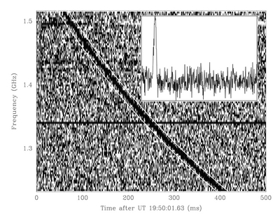

Credit: Swinburne
Fast radio bursts are intense bursts of radio emission that have durations of milliseconds and exhibit the characteristic dispersion sweep of radio pulsars. The first was discovered in 2007 by Lorimer et al., although it was actually observed some six years earlier, in archival data from a pulsar survey of the Magellanic clouds. It was dubbed the “Lorimer Burst”.
Like giant pulses from radio pulsars like the Crab, the first burst was extremely intense (30 Jy peak flux) and observed across a 288 MHz radio band. The dispersion measure of the radio burst was 375 pc cm-3 and was near the location of the Small Magellanic Cloud. The limited dynamic range of the instrumentation prohibited an exact measure of the flux, but it has been estimated that several 100 bursts could occur every day with a small probability of detection.
For many years the burst was unique but its occurrence in 3 of the 13 beams of the Parkes multibeam receiver, classic dispersion sweep and evidence for scatter-broadening with the functional form expected made it rather convincing.
Years later, Swinburne student Sarah Burke-Spolaor published some disturbing findings when she reanalysed two other pulsar surveys looking for other bursts. She found that at almost the exact dispersion of the Lorimer Burst there were other swept sources of radio emission, but that they occurred in all beams. Interest in the subject waned.
Then, dramatically, in 2013, Thornton et al. discovered not one, but another four “Lorimer bursts” and dubbed then Fast Radio Bursts or FRBs. The dispersion measures of these bursts were much higher than the Lorimer burst, and ranged up to almost 1000 pc cm-3. These bursts were found as part of the High Time Resolution Universe surveys (Keith et al. 2010) being conducted at the Parkes 64m radio telesope. The brightest burst exhibited a classic dispersion sweep and showed scatter-broadening with power law dependencies exactly like we’d expect from true extra-terrestrial sources of radio emission.
Models of the intergalactic medium suggest that the FRBs may come from as distant as a Gpc.
In 2014 the first FRB was announced at another observatory, this time at Arecibo. The burst was in the direction of the Galactic anti-centre and had a dispersion measure of about 500 pc cm-3.
Until an FRB is localised to a host galaxy, or confirmed at other wavelengths, their origin will remain controversial.